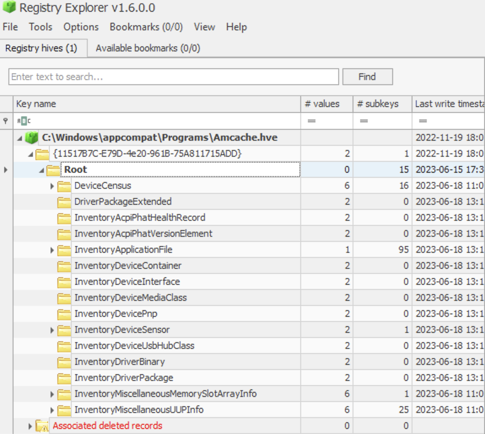
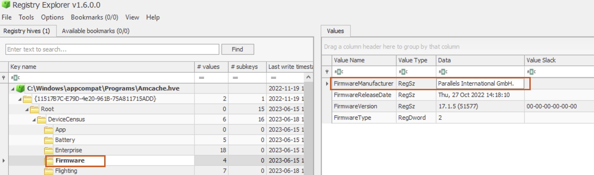
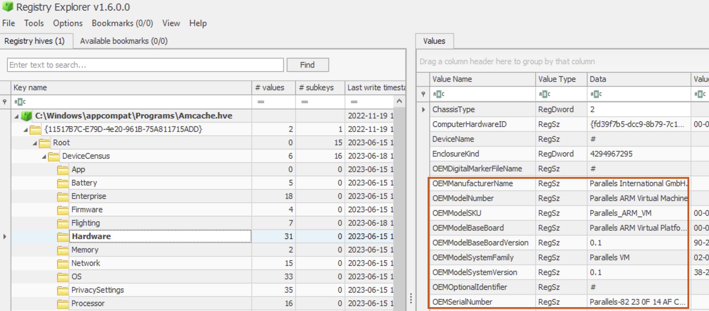
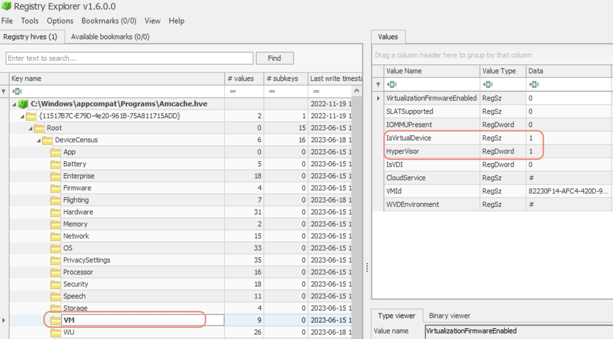
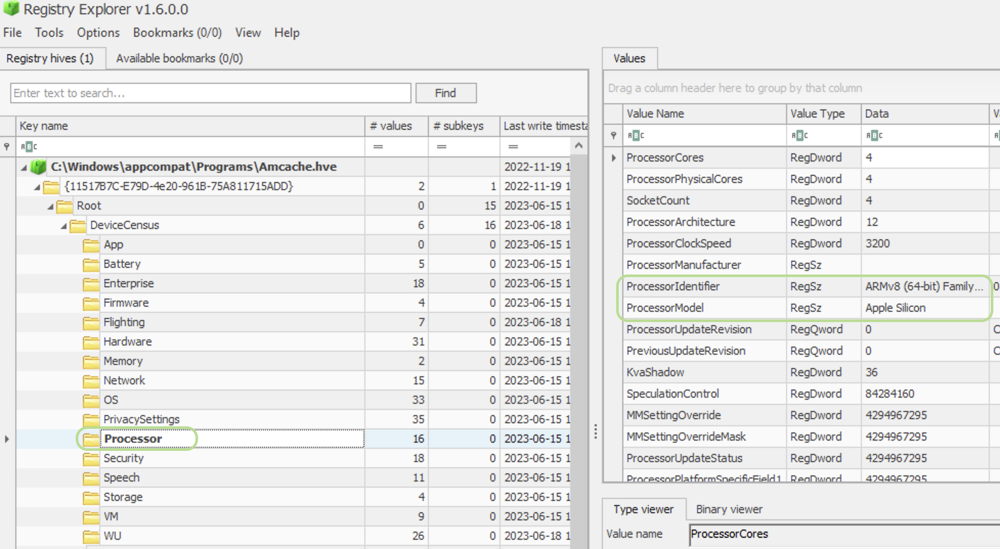
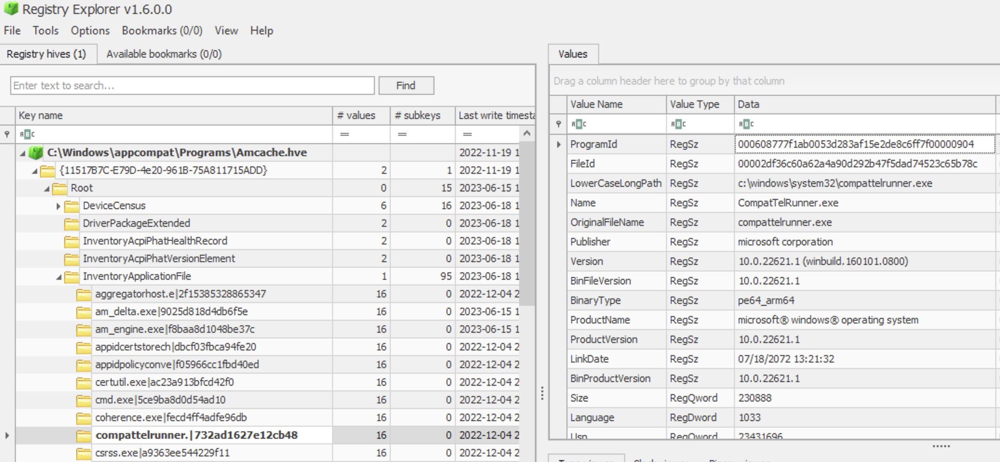
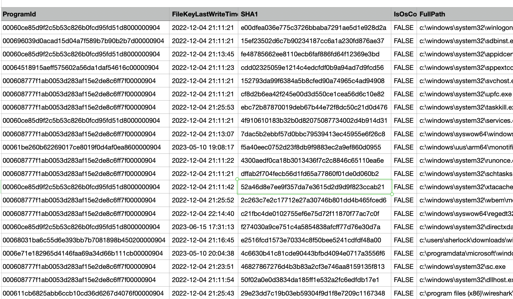

And yet another place to check for program execution. It’s like a forensic treasure of program execution. You can see installed applications, drivers and unassociated progs. For each entry, you can see loads of metadata. You can even see the SHA1 hashes! How great is that? However, be careful; installed doesn’t mean executed!
✍🏻 It’s not reliable evidence of execution. Use it as evidence of PRESENCE and for metadata collection, and use other artefacts (such as Prefetch) to prove execution.
☠️ Anatomy
It used to be called RecentFileCache.bcf. And then it was changed several times. You could see the first execution time on Win8.
❗️ The GUID indicates the volume GUID, not the user GUID!
⛔️ The format and info in this particular artefact are not driven by the OS but rather the DLL’s version!
Path 📂 : C:\Windows\AppCompat\Programs\Amcache.hve.
Win8+. This artefact stores information about program execution, including those executed from a USB drive, loaded drivers, programs executed, etc. It contains the following information:
🐾 install date and time 🐾 name 🐾 version 🐾 path to exe/dll 🐾 source info 🐾 path to uninstall 🐾 publisher name 🐾 volume GUIDs 🐾 container ID of the device from which the program was run. 🐾 SHA1 hash of a driver or exe
Several types of processes are tracked here:
- Executed GUI
- Executables and dlls copies during app execution
- Executables in the folder scanned by Microsoft Compatibility Appraiser (scheduled task). Programs Files and Desktop.
Here is what Amcache looks like in Registry Explorer (open Amcache.hve from the upper menu File -> Open).

Let’s understand each forensically valuable part one by one.
DeviceCensus
This “directory” contains some information about the physical machine itself. For example, for my Parallels VM, there was also a VM subkey that contained some value VMId.


I can see that this hve file belongs to a VM.

I can even see that it’s a Apple Silicon by looking at the Processor key 🔑.

File
Full path to the executable.
⚠️ Not present on my Windows 10 and Windows 11 (Parallels VM).
InventoryApplication
Consists of folders/subkeys named by the program id. Each folder will contain the following important information: OSVersionAtInstallTime, InstallDateMsi, InstallDate, InstallDateArpLastModified, InstallDateFromLinkFile, Name, Publisher, RegistryKeyPath (may show user SID), Source, UninstallString, ProgramID (consistent across systems).
👀 On my Parallels Windows 10 machine, I noticed that Windows and Mac executables are listed here, even though I have explicitly set preferences for not sharing Mac folders or disks with the VM. ⛔️ No such key on my Windows 11 machine (VM, Parallels).
InventoryApplicationFile
App name + file hash (algo unknown). Contains a field, an SHA-1 hash (FileID), padded with 4 leading zeros, a full path to the executable (LowerCaseLongPath), file size (Size), and compilation time from PE header (LinkDate). Use a list of known goods or VirusTotal.

InventoryDeviceContainer
Contains ModelName and FriendlyName. When devices get connected, they might install some software to be able to work correctly.
InventoryDevicePnp
Contains ContainerID, DriverID, Description, Manufacturer and Model.
Programs
Where this program is located within the FS and the source (for example, AddRemoveProgram). And also the information path to the uninstaller in the registry.
⛔️ Don’t have it on my VM (Windows 11, Parallels)
⏰ Timestamps
The key’s last write time of the key itself indicates the first time the application was executed.
🛠 Tools
AmCacheParser.exe + Timeline Explorer.
AmcacheParser.exe -f <path_to_AmCache.hve> -i on --csv <export_to_folder_no_quotes> --csvf <desired_filename>
What are unassociated files? Those that are not associated with a known source. Good starting point when looking for bad files.
⚠️ In my case on a macOS with Parallels and Windows 10 installed, this evidence also contained mac executables.
